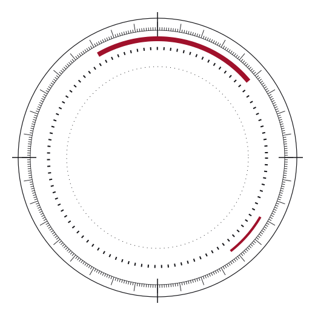
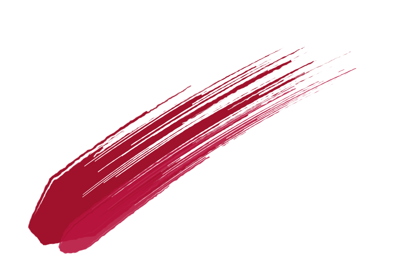
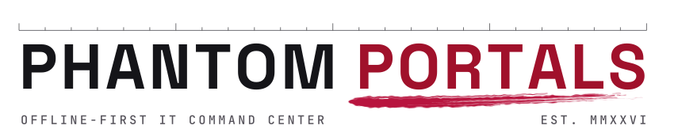
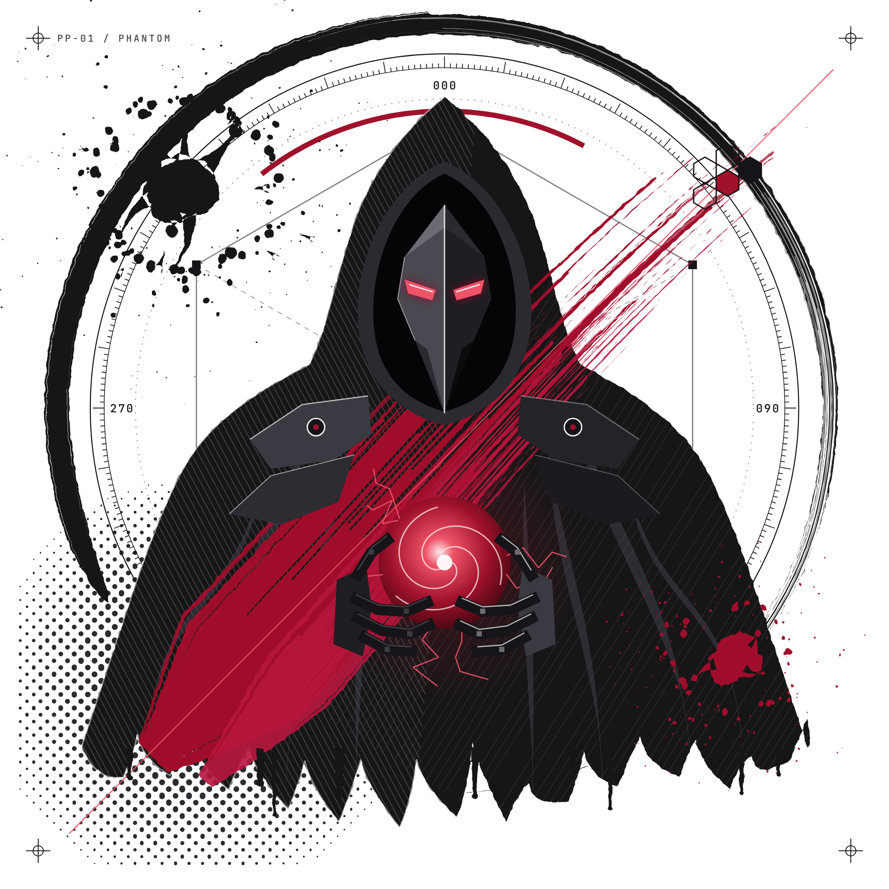

Offline-first IT command center
Deck title on
two lines
Subtitle — who this is for and what they will leave with.

YYYY-MM-DD · PresenterSection 01
Section title
One sentence on what this section proves.
01
One idea per slide, stated as a claim
- First supporting point, short enough for one line
- Second point — evidence, not adjectives
- Third point, then stop
Phantom Portals
Sample numbers — replace with real, sourced values
Three numbers, one focus
Metric A00
What it measures and the source.
Metric B · focus00%
The one number the slide is about.
Metric C0.0
What it measures and the source.
Phantom Portals

Image slide
Use a real screenshot from 40_MOCKUPS/screenshots or an approved asset. Mockups must be labelled as mockups.
Phantom Portals
Closing line
contact · link · date